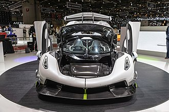

The Koenigsegg Jesko is a limited production mid-engine sports car produced by Swedish automobile manufacturer Koenigsegg. The car was introduced at the 2019 Geneva Motor Show and it completely sold out before the show ended.[5][6][7] The car succeeds the Agera. The name Jesko is a tribute to the company founder's father, Jesko von Koenigsegg.[8] There are two variations of the car – "Absolut" (top speed) and "Attack" (track-focused).[9]
The engine is a development of the 5.0-litre twin-turbocharged V8 engine used in the Agera. It has four valves per cylinder each with a bore and stroke of 92 mm × 95.25 mm (3.62 by 3.75 inches) and a compression ratio of 8.6:1. The engine has a power output of 1,280 hp (1,298 PS; 954 kW) at 7,800 rpm and 1,000 N⋅m (738 lb⋅ft) of torque at 2,700 to 6,170 rpm on normal gasoline and has a power output of 1,600 hp (1,622 PS; 1,193 kW) and 1,500 N⋅m (1,106 lb⋅ft) of torque at 5,100 rpm on E85 biofuel.[10][11]
